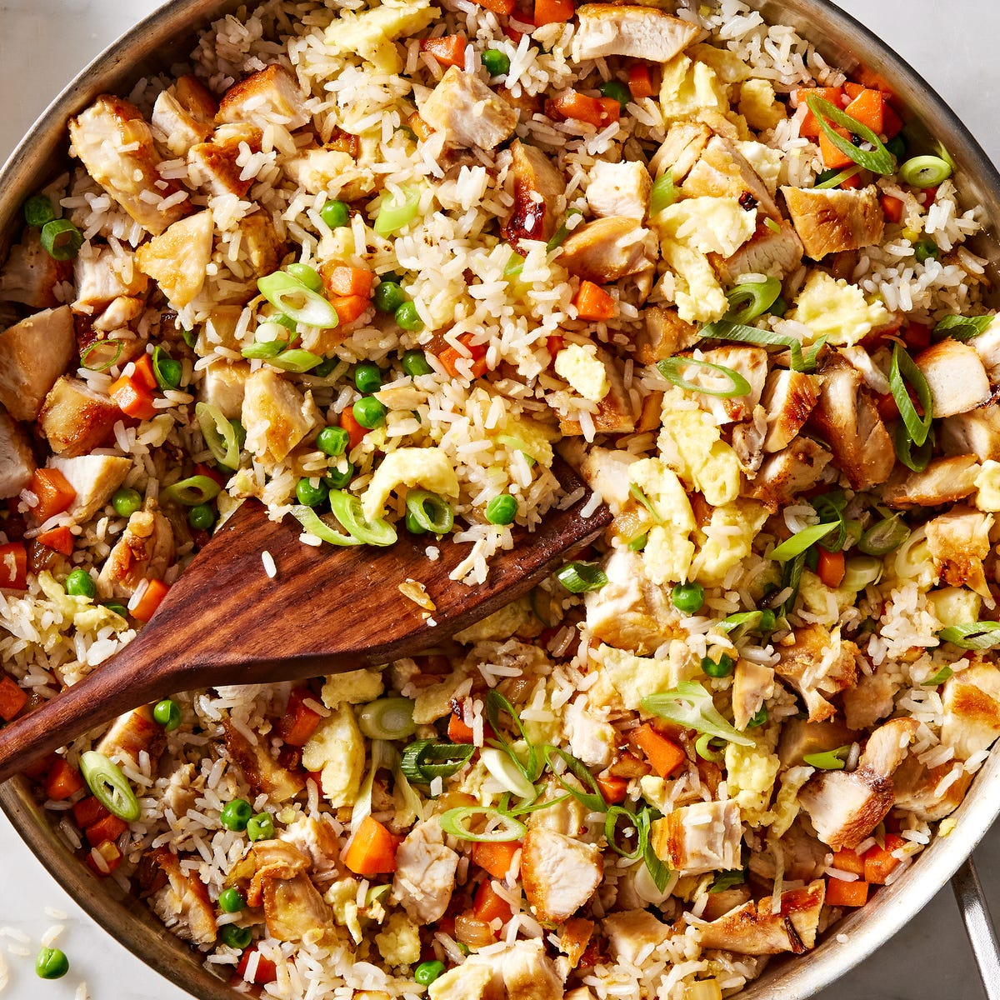

Chicken Fried Rice

Description
If you have leftover rice hanging out in your fridge, then classic fried rice is a no-brainer. There are countless ways to bulk up this staple dinner, from beef fried rice to kimchi fried rice to pineapple fried rice. One of my favorite variations? Classic chicken fried rice. Shake up your weeknight chicken dinner by recreating the take-out staple right at home. With this easy recipe, it's easy to make incredible fried rice at home—just how you like it.
Ingredients
- 5 Tbsp. neutral oil, divided
- 3 chicken breasts (about 1 1/2 lb.)
- Kosher salt
- Freshly ground black pepper
- 1 medium onion, chopped
- 2 carrots, peeled and diced
- 3 cloves garlic, minced
- 1 Tbsp. freshly minced ginger
- 4 cups cooked white rice (preferably leftover)
- 3/4 cup frozen peas
- 3 large eggs, beaten
- 3 Tbsp. low-sodium soy sauce
- 2 green onions, thinly sliced
Steps
- Preheat oven to 350°, rack in the middle position.
- In a medium skillet over medium heat, heat 2 tablespoons neutral oil. Season chicken with salt and pepper on both sides, then add to skillet. Cook until golden on both sides, 8 minutes per side.
- Transfer pan to oven and bake until cooked through, 6-8 minutes longer. Remove from skillet and let rest 5 minutes, then cut into bite-sized pieces.
- To the same skillet, heat 2 tablespoons oil. Add onion and carrots and cook until soft, 5 minutes, Add garlic and ginger and cook until fragrant, 1 minute more. Stir in rice and peas and cook until warmed through, 2 minutes.
- Push rice to one side of skillet and add remaining tablespoon oil to other side. Add egg and stir until almost fully cooked, then fold eggs into rice. Add chicken back to skillet with soy sauce and green onions and stir to combine.
Home